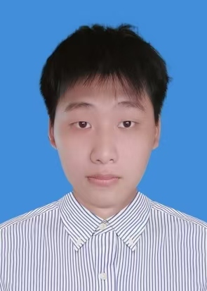

导出 PDF 简历
郑俊鑫
2003/09/12
广东汕头
15815155753
2323857919@qq.com
本科 · 汕头大学
英语六级 (CET-6)
个人资料网

教育背景
汕头大学
电子与计算机工程 · 本科
2022.10 - 2026.06
学业成绩：GPA 3.63 / 5.0 (专业排名 13.33%)
查看成绩单
主修课程：
C语言、微机与单片机原理、离散数学、数据结构与算法、模拟/数字电路、信号与系统、Python与数据科学。
专业技能
嵌入式开发 (STM32/HAL/RTOS)
C/C++
Python
PCB设计 (立创EDA/AD)
硬件仿真 (Multisim/Proteus)
机器学习 (PyTorch/Scikit-learn)
MySQL/Redis
AI Agent 开发
项目经历
基于频差法的超声波车速测量系统
核心负责人
2025.10 - 2026.04
背景：
针对低成本高精度测速需求，以 STM32F103C8T6 为核心设计超声波多普勒频差测速方案。
硬件实现：
完成多路信号调理电路设计、超声波发射驱动及 DS18B20 温度补偿模块，通过 Multisim 验证电路稳定性。
软件开发：
利用 HAL 库实现 40kHz PWM 精准发射及定时器捕获频差，规避高开销 FFT 算法，显著降低算力需求。
工程落地：
设计四层 PCB，解决传感器上电异常等电磁兼容问题，最终实现实物高可靠性运行。
基于 Agent 的智能招聘匹配网站
全栈开发
2025.12 - 2026.03
职责：
针对招聘市场匹配效率低的问题，构建基于大模型 Agent 的求职岗位自动匹配模型。
技术：
负责前后端代码联调与环境配置，编写技术开发计划书。
基于深度学习的寄生虫智能诊断系统
算法研发
2023.06 - 2024.07
背景：
面向医疗资源匮乏地区，搭建云端 AI 辅助诊断系统。
工作：
完成数千份样本的分类与标签标注，基于卷积神经网络进行模型训练与调参，验证了 AI 在寄生虫识别上的可行性。
基于 STM32 的循迹避障小车
硬件/软件开发
2024.05 - 2024.08
功能：
实现红外循迹、超声波避障及路径规划。负责 STM32 程序编写、电机驱动调试及传感器功能联调，确保了小车在复杂障碍物环境下的稳定运行。
荣誉成就
2026：
北回归线黑客松 Agent 赛道最佳场景理解奖
2025：
数学竞赛省级三等奖 / 蓝桥杯软件类省级三等奖 / 校级三等奖学金
2022-2025：
连续三年获得
国家励志奖学金
2022-2024：
连续两年获得校级二等奖学金 / 连续四年获得校级全额奖学金
自我评价
扎实的电子与计算机工程理论基础，精通嵌入式开发、硬件电路设计与全流程 PCB 制作。具备全栈开发视野，熟练应用 AI 工具进行辅助编程。逻辑严谨，擅长工程落地与复杂问题排查，能快速适应高强度的技术岗位挑战。